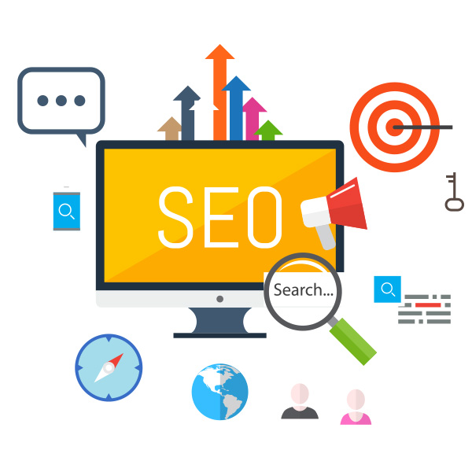
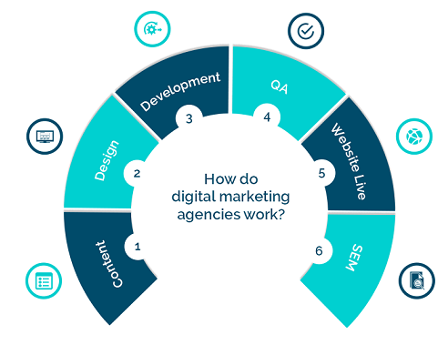
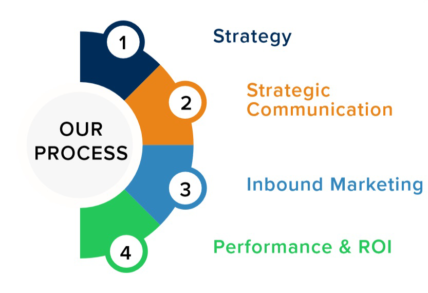

Strong SEO is not about tricking Google. It’s about Associating
with Google to provide the best search results to end users.
SEO in Digital Marketing –Just imagine having an outlet without having any signage onto it – no name, no windows…nothing in particular. You would expect people may drop in out of curiosity, looking for product A, whereas you are selling product B. Now, when you have a shop with a proper name and probably the product image on it, this would attract so many people off the street, and they would ask for what you sell, and some of these customers would tell other potential targets about their buying experience and about your products and your shops.
Our Focus
We help Organizations to outshine in the competitive digital world. Stop excessiveness on marketing and getting limited marketing outcomes.
What We Offer
We build the custom marketing plan using the new digital marketing strategies, competitive analysis and data analysis tools. Our profitable marketing expands brand visibility,lead qualification and benefits to grow your business.
Digital Marketing Process:
Research:
We conduct our Brand Storming session in order to familiarize ourselves with your product and/or services. We then initiate a multi-media research initiative involving social listening, analytics, user journey analysis,keyword data, market trends and competitive information. We then create your Digital Marketing Plan setting your strategy, goals, brand objectives, and content outline.
Digital Marketing Plan / Strategy:
we have done our research and identified our goals and objectives it’s now time to develop the Digital Marketing Strategy. We will begin to outline a roadmap of all the content and elements that must be developed according to your specific target market(s) and goals. At this stage we will build a comprehensive and detailed strategy outlining motivators, media vehicles these potential buyers use and a plan of action to engage these customers.
Design & Production:
This the stage at which we are designing and producing content that will be relevant and engaging your future customer. The content developed will be aimed at the agreed buyer persona addressed in Stage 2 and aimed at converting to the specified call to action and goals established. The objective of all content created at this stage is to convert with the goal of “closing deals”
Launch and Connect:
Launching and connecting to prospective buyers requires consistency and must be deliberate. This means that all CTA’s (calls-to-action) and content be relevant and enticing to the buyer. This requires the execution of the specific strategy developed in Stage 2 around the buyer persona and objectives. All content produced will include keywords consistent with an offer & landing pages,be relevant, action-oriented, use strong and appropriate on-page placement and we must test changes and analyze results. This may also include a paid media support to further accelerate conversions.
Deliver and Convert:
Not really a final stage but rather the beginning of a new one, this is the stage at which your customer experiences your product and/or service and where digital branding can have exponential effect on future sales. At this stage we’re monitoring and managing the post sale transaction. This is also the phase at which we discuss leveraging the momentum. As part of this phase, we also monitor and evaluate the effectiveness of the campaign and assets developed.